[toc]
Oracle 基础架构知识
1. 物理结构
Oracle的基本结构：
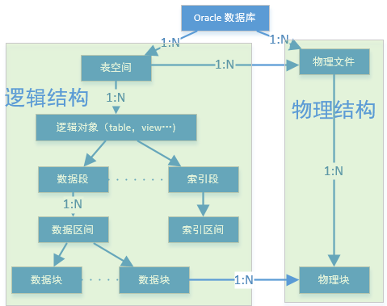
Oracle的物理结构是由：
- ControlFile
- DataFile
- Redo Files
- Spfile
- Archive log files
-
password File (pwdSID.ora)
-
依据使用时是否被调入内存可分两类：
- 1.数据库文件：
- Control file
含有维护与验证数据库完整性的必要信息(SCN…,识别数据文件与redo log files,每个库至少一个以上Control file)，控制文件 includes： - 数据库名 (db_name) - tablespace info - Names and location of associated data file and redo log files - All names and positions of redo log files - The timestamp of th database creation - The current log file sequence number - Checkpoint information - 关于redo日志和归档的当前状态信息
- Data files
存储数据的文件。代表根据使用的磁盘空间与数量决定整个数据库的容积。
- Redo log files
含有数据库所有的更改记录，以防故障时启用数据恢复。
一个数据库至少一对（两个）redo log file。
- Trace files
在Instance中运行的每个后台进程都有一个Trace file 与之相连。
记录后台进程遇到的重大事件的信息
- Alert files
特殊的跟踪文件，每个数据库一个跟踪文件同步记载数据库的消息和错误。
- 2.非数据库文件:
- parameter file (spfileSID.ora)
包括大量影响实例功能的设定，如：
- Control file 的定位
- Oracle用来缓存从磁盘上读取的数据的内存数量
默认优化程序的选择和数据库相关，执行两个重要的功能，为数据库指出控制文件和指出归档日志的目标。
password file ( pwdSID.ora )
认证哪些用户有启动和关闭Oracle实例。
归档文件：
- Redo log file的脱机副本，这些副本可能对于从介质失败中进行恢复很是必要。
2.逻辑结构（Tablespace，Segment，Extent，Block）
1. Tablespace
基本逻辑结构，一系列数据文件的集合。
2. Segment
对象在数据库占用的空间
3. Extent
为数据一次性预留的一个 较大的存储空间。
4.Block
Oracle最基本的存储单位，在建立数据库时候被指定。
3.内存结构 (SGA,PGA)
SGA
- 存储数据库信息的内存区域，且为数据库进程所共享。
- 包含数据库的数据与控制信息。
- 在Oracle服务器所驻留的计算机的物理内存中分配出来。实际内存不够，向虚拟内存写入。
PGA
- 包含单个服务器进程或单个后台进程的数据与控制信息。
- 与多个进程共享信息的SGA相反，PGA只被一个进程使用
- PGA创建进程时分配，终止进程时回收内存。
4. 后台进程
-
DBWR Database Writer
-
将数据库的缓存区高速缓存的更改的数据写入到数据文件
-
LGWR Log writer
-
将REDO日志缓冲区的脏数据写入到在线redo日志文件
-
SMON System Monitor
-
检查数据库的一致性，必要时在数据Openj时修复数据数据库
-
PMON Process Monitor
-
负责在一个Oracle进程失败时清理资源
-
CKPT Checkpoint process
-
负责在每当缓冲区高速缓存中的更改永久地记录到数据库中时，更新control file与data file的数据库状态信息。
- 在检查点进程负责在检查点向DBWn发出信号， 更新control file与data file,重新指示出最新的检查点。
- 默认情况下，init.ora中CHECKPOINT_PROCESS=FALSE,意为不启用CKPT进程的，那这任务是由LGWR完成。
-
由于LGWR在数据库有许多数据文件时，性能会明显降低，需要启用CKPT，CKPT不写块到磁盘，而由DBWR负责完成。
-
ACHn
-
每次日志时，将已满的日志组进行备份或归档
-
服务进程
-
用户进程服务
-
用户进程
-
客户端，负责将用户的SQL语句转递给服务进程，并从服务器段拿回查询数据。
5. SCN
- 一个由系统内部维护的序列号。
- 当系统需要更新的时候自动更新，是系统中维护数据的一致性和顺序恢复的重要标志。
Oracle架构实现原理
一般所说的Oracle是指Oracle的RDBMS(Relational databases Management system )，一套Oracle数据库管理系统。也称Oracle Server
Oracle Server = Instance + Database （两者各独立）
Instance = memory pool + backgroup process
Database = Data Files + Control file + Redo log files
所以 Oracle Server = 内存池+ 后台进程 + 数据文件 + 控制 + 日志文件
Oracle Server 与 Database 是1：N，每个Database各自独立，各自挺有属于自己的全套相关文件。
Database由一些物理文件组成，三给表存储在Database中，但不能直接读取，需要通过OracleInstance才能访问Database，Instance连接Database只能1：1，Database可以被N个Instance连接。
Oracle架构抽象： Oracle体系=内存架构 + 进程架构 + 存储架构
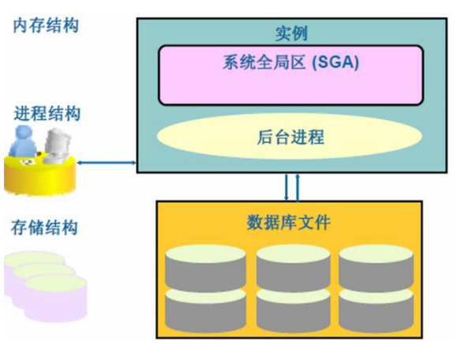
内存架构
-
Memory Stuctures
-
SGA
- Shared Pool
- Library Cache
- Data Dictionary Cache
- Database Buffer Cache
- Java Pool
- Redo Log Buffer
- Large Pool
- Shared Pool
-
Background Process Structures
PMON ,SMON,DBWR,LGWR,CKPT,Others
- 系统全局区（SGA）
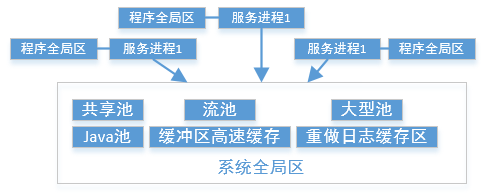
SGA的默认Size 由Oracle安装时根据OS的sysctl.conf决定
kernel.shmall = 2097152
kernel.shmmax = 2147483648
kernel.shmmni = 4096
kernel.sem = 250 32000 100 128
net.ipv4.ip_local_port_range = 1024 65000
net.core.rmem_default = 1048576
net.core.rmem_max = 1048576
net.core.wmem_default = 262144
net.core.wmem_max = 262144
检查SGA正使用的大小
select * from v$sga;
NAME VALUE
-------------------- ----------
Fixed Size 2022144
Variable Size 503317760
Database Buffers 1627389952
Redo Buffers 14753792
SQL> show sgaTotal
System Global Area 2147483648 bytes
#对应kernel.shmmax = 2147483648
Fixed Size 2022144 bytes
Variable Size 503317760 bytes
Database Buffers 1627389952 bytes
Redo Buffers 14753792 bytes
SGA在Instance启动时被分配，关闭时被释放。
一定范围内自动响应DBA指令
SGA结构：
-
Shared Pool
-
Library Cache
-
Data Dictionary Cache
-
Database Buffer Cache （高速缓存缓冲区）
执行SQL的区域。
- 执行SQL不直接对磁盘的数据文件更改操作。
- 复制数据文件到高速缓存缓冲区（相当于该SQL相关的数据文件副本），再去更改高速缓存缓冲区的数据块，这些数据块副本会保留一段时间，直到其占用的缓冲区被另一个数据库覆盖为止（缓冲区Size有限）
- 查数时，为拉高执行效率，查数据也要经过缓存。Session建立时，会计算出那些数据块包含关键的行，将它们复制到缓冲区来缓存。此后，相关的关键行会传输到Session的PGA进行进一步处理。这些数据也会在数据库缓存区缓存一段时间。频繁访问的数据缓存于数据库缓冲区缓存中，目的是减少磁盘I/O的需要
- 当缓冲区的数据块与磁盘的数据块不一致时，此时这些称为“脏缓冲区”，这些数据块副本一定要写入到磁盘数据文件中。
数据库缓冲区缓存的大小依据：
- 缓存就足够大。以便缓存所有被频繁访问的数据块。过大，磁盘I/O次数会过多。
- 不能太大。防止一些极少访问的数据块也一并复制到缓存中，增加缓存区的搜索时间。、
调整DB_CACHE_SIZE大小：
-
查SGA大小。因为DB_CACHE_SIZE受SGA影响
sql show parameter sga_max_size -
查SHARED_POOL_SIZE大小
sql show parameter shared_pool_size -
计算DB_CACHE_SIZE大小
shared_pool_size + db_cache_size = SGA_max_size * 70% -
修改DB_CAHCE_SIZE大小
mysql alter system set db_cache_size = ***M scope=spfile sid='***'; conn / as sysdba shutdown immediate; startup show parameter db_cache_size; -
Java Pool
只有当应用程序需要在数据库中运行JAVA存储程序时，才用到JAVA池
- 日志缓冲区 Redo Log Buffer
小型的，用于短期存储将写入到磁盘的重做日志的变更向量的临时区域，主要提供更快的日志处理效率。
- shared pool
足够大，以缓存所有的频繁执行的代码和频繁访问的对象定义。
过小，由于该内存空间是用来分析SQL语句（语义分析），过小导致服务器会话会抢夺其中的空间来语句。这些语句又可能被其他语句重写。如重新执行时，将不得不重新分析语句。
过大，会将仅执行一次的语句也缓存了，增大了搜索的缓存量，增长了搜索时间。
其内的三个数据结构：
- 库缓存 （library cache） ：存储最近执行的代码
- 数据字典缓存（data diction cache）：存储最近使用的对象定义
- PL/SQL缓冲区 ： 存储PL/SQL的过程，函数，的过程
调整共享池大小
select component,current_size,min_size,max_size fromv$sga_dynamic_components; –显示可能动态大小的SGA组件的当前最大和最小的容量
alter system set shared_pool_size=101M;
- Large Pool
供共享的服务器进程使用。
进程架构
-
用户连接进程
-
后台进程
-
用户连接进程
用户连接进程=用户进程＋服务进程 + PGA
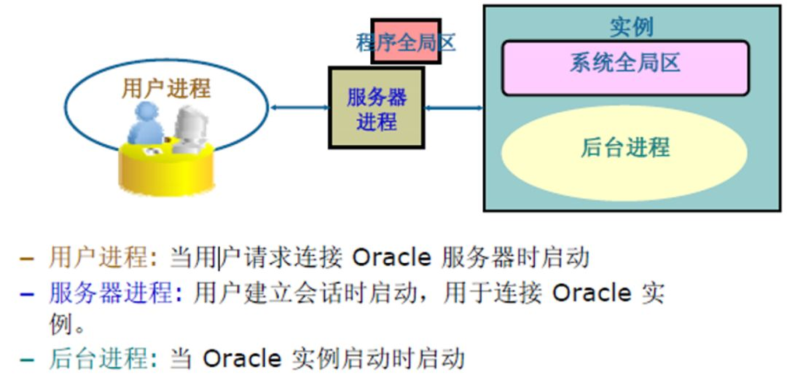
-
User Process 当用户请求连接Oracle服务器时，在客户端创建该进程
作用1. 为DB User与Server Process建立连接
作用2. 不与Oracle Server直接交互。
-
Server Process 用户建立会话时启动，连接实例
作用：
- 处理Database User与Oralce Server之间的连接
- 与Oracle Server直接交互
- 复制执行和返回结果
运作原理：当User与UserPorcess建立了一个Connect之后，OracleServer会创建一个ServerProcess，然后由UserProcess与ServerProcess建立连接，ServerProcess会通过User提交的请求信息来确定与Oracle Instance建立一个会话。
Session会话：User通过UserProcess（准确来说是ServerProcess）与OralceInstance建立的连接，称之为会话，一个User可以N个会话，User可以多次连接到同修实例，多个Session可以使用同一个Connect.
-
Background Process 随实例启动而启动。
PGA (程序全局区)
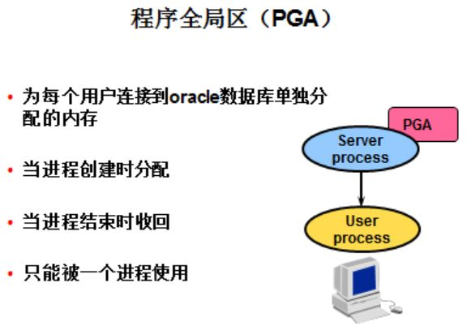
PGA: Oracle Server Process 分配出来的内存区，专用用于当前的User Session的私有区域。用户不同PGA不同。
PGA含有OracleServer Process数据和控制信息的内存区域，由3部分组成：
- 栈空间：存储Session的变量，数组等的内存空间
- Session Info：如运行的不是多线程服务器，会话信息保存在PGA中，如果是多线程服务器则保存在SGA中。
- 私有SQL区：保存绑定变更（binding variables）和运行时缓冲区（runtime buffers）等信息
Oracle的connect连接和session会话与User Process紧密相关。
db_name和Instance_name共同确定一个DB，Instance_name用作Oralce与OS的联系。也是与Oracle Server与外部连接使用。 User提交连接时，UserProcess 先与ServerProcess连接，ServerProcess依照请求中的db_name与instance_name来确定连接的数据库（生产会有多个数据库） 确保了一机多库，还能彼此保持独立性，同一个Database可被多个库内的用户发起Instance连接。因为每个不同的数据库的都可有同名的sys，system等用户。
- 后台进程
主要是完成数据库管理任务，它是Instance与Oracle Database的纽带，分为：
-
核心进程（必须存在，一死全挂，同生共死）
常用的核心进程如下：6个
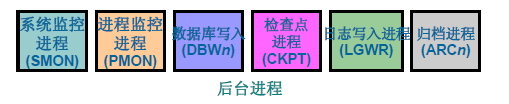
SYS@RACDB_1 select name ,description from v$bgprocess where paddr <> '00';
NAME DESCRIPTION
----- ----------------------------------------------------------------
PMON process cleanup
VKTM Virtual Keeper of TiMe process
GEN0 generic0
DIAG diagnosibility process
DBRM DataBase Resource Manager
RSMN Remote Slave Monitor
PING interconnect latency measurement
PSP0 process spawner 0
ACMS Atomic Controlfile to Memory Server
DIA0 diagnosibility process 0
LMON global enqueue service monitor
NAME DESCRIPTION
----- ----------------------------------------------------------------
LMD0 global enqueue service daemon 0
LMS0 global cache service process 0
RMS0 rac management server
LMHB lm heartbeat monitor
MMAN Memory Manager
DBW0 db writer process 0
LGWR Redo etc.
LCK0 Lock Process 0
CKPT checkpoint
SMON System Monitor Process
RECO distributed recovery
NAME DESCRIPTION
----- ----------------------------------------------------------------
GTX0 Global Txn process 0
CJQ0 Job Queue Coordinator
RCBG Result Cache: Background
QMNC AQ Coordinator
RBAL ASM Rebalance master
ASMB ASM Background
MARK mark AU for resync koordinator
MMON Manageability Monitor Process
MMNL Manageability Monitor Process 2
31 rows selected.
1.1. 数据库写入进程（DBWn）
ServerProcess连接Oracle后，通过数据库写入进程（DBWn）将数据缓冲区中的“脏”缓冲区的数据（脏数据）写入到存储结构（数据文件，磁盘文件）
将数据写到磁盘，也就是数据主加变化写入到数据文件。只做这一件事。
最多20个进程，CPU个数>=进程数=20，DBW[0-9]~DBW[a-j]
1.2. 检查点 （CKPT）
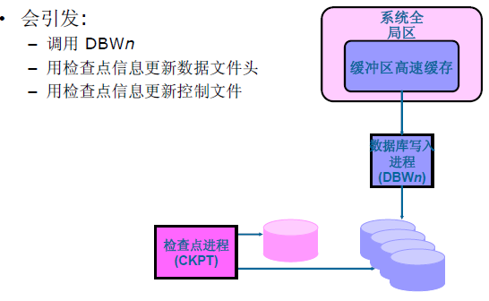
CheckPoint（CKPT）
- 主要用途更新数据文件头，更新Controlfile和触发DBWn数据库写进程
- CHPT降低数据库性能，但提高了恢复能力。可理解为：阶段性保存数据，一定条件满足就触发，执行DBWn存盘操作。
1.3. 进程监视进程（PMON）
Process Monitor：
在后台进程执行失败后，由PMON负责清理数据库缓存和闲置资源，Oracle的维护机制。
- 清除死进程
- 重新启动部分进程（调度进程等）
- 监听自动注册
- 回滚事务
- 释放锁
- 释放其他资源
1.4. 系统监视进程（SMON）
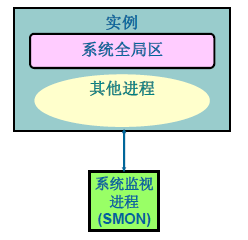
- SMON在启动数据库时，会自动在实例崩溃时进行自动修复。
- 清除作废的排序临时段，回收整理碎片，合并空闲空间，释放临时段，维护闪回的时间点。
- 在老版本中，大量删除表时，SMON会一直很忙，直到所有碎片空间都整理完。
1.5. 重做日志文件与日志写入进程（Redo Log Files &LGWR）
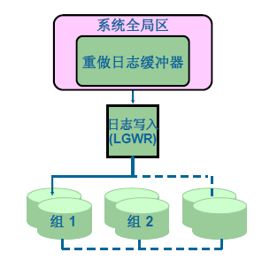
主要用于记录数据库的改变与记录数据库被改变之前有原始状态，所以应当对其作多备份，用于恢复和排错。
- 激活LGWR条件：
- 提交（COMMIT）
- 日志缓冲区超过1/3
- per 3 seconds
-
每次DBWn执行之前
-
非核心进程（完成数据库的额外工作，少了数据库也可正常工作） #### 2.1 归档进程（ARCn）
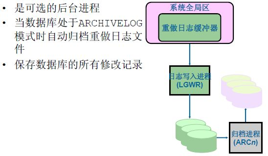
存储架构
Oracle RDBMS存储结构主要由Database组成。Database又可以分为物理结构与逻辑结构理解。
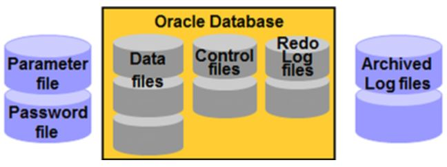
物理结构
OS的文件集合，OS的物理文件：
1. 数据文件
- 数据的仓库
- 所有的数据库数据
- 只属于一个库
- 来自被称为“表空间”的数据库存储逻辑单元
- 可以直读进内存 ，执行SQL时，将相关数据文件缓存区副本执行。
- 备份策略可以保护数据文件。
2. 控制文件
-
包含维护和验证数据库完事性的必要信息。
-
记录联机重做日志文件，数据文件的位置，更新的归档日志的位置
- 存储着维护数据库完事性所需要的信息，数据库名
- 二型制存储，不能编辑内容。
3. 重做日志文件
- 对数据库所做的更改记录保存以便恢复。
- 原理：
- 按时间顺序，将数据库的一连串变更向量（做了什么操作）存储起来（将变更的地方标记起来）
- 内容包括所有已经变更完成操作的信息和完成操作之前的数据库状态
- 如果数据文件损坏，可以将这个变更向量应用于数据文件备份进行重做（重建）工作。将它恢复到发生故障的那一刻前的状态。
- 日志文件类型：
- 联机重做日志文件：记录连续的数据库操作。
- 归档日志文件（Archive Log Files）：用于时间点恢复，当Redo Log Files存满时，对日志进行归档备份，以便还有数据时使用。
SELECT NAME FROM V$LOGFILEV$LOGFILE y记录了redolog文件列表。
4. 归档日志文件
5. 参数文件
SGA结构会根据些参数因为有人设置内存和拉起后台程序。
6. 口令文件
当用户以User/Pwd建立会话时，Oracle根据存储数据字典的用户定义对用户名与密码进行验证。
逻辑结构
表空间，典型的逻辑结构类型。包含若干个数据文件。
- 表空间，存储数据库的对象，数据库开辟出来的一个逻辑空间。
- 信息存储的最大逻辑单元
- 存放数据库文件的地方，数据又被存储在表空间的数据文件中。
- 一个库可由多个表空间组成。
- Oracle调优就是通过表空间来实现（oracle数据库独特的高级应用）
逻辑空间到物理空间的映射
- 段，区，块
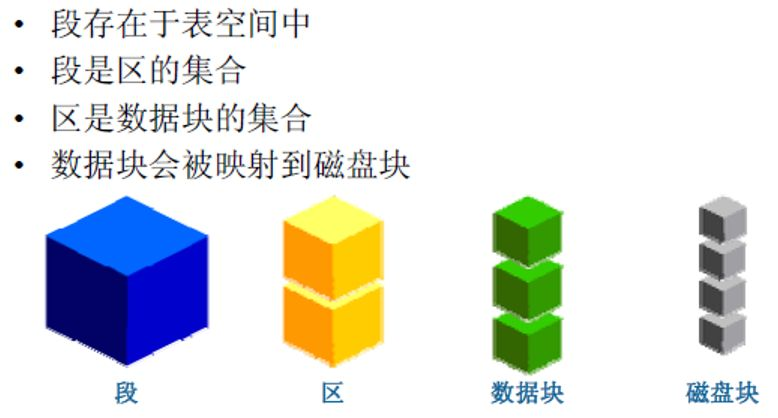
执行SQL的流程：
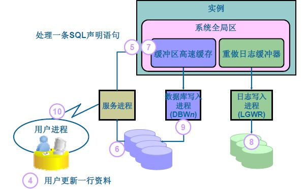
- 将SQL加载入数据库缓冲区
- 将相关的数据文件高价收购加载入数据库缓冲区。
- 执行SQL,修改数据文件副本，形成“脏缓冲区”。
- CKPT检测到“脏缓冲区”，调用DBWn。
- 在DBWn运行之前，先运行LGWR，将数据文件的原始状态和改变记录到Redo Log Files。
- 运行DBWn，将“脏缓冲区“的内容写入到数据文件。
- CKPT修改控制文件和数据文件头部信息。
- SMON回收不必要的空间资源。
最后
举例RDBMS运行流程：
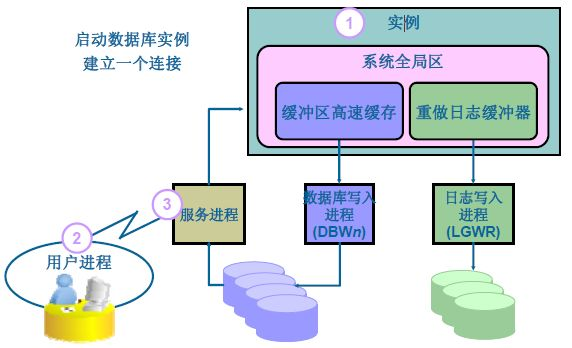
- User access Oracle Server之前提交请求（db_name,Instance_name,username,password等信息），Oracle Server接收到请求并通过Password File验证后，分配SGA内存池，启动后台进程时，创建并启动实例。
- 在启动实例之后User Process与Server Process建立Connect。
- 再通过Server Process与Oracle Instance完成建立Session。
- 用户执行SQL时，由Server Process接到并直接到Oracle交互。
- SQL语句通过Server Process到达Oracle Instance，再将SQL载入数据库缓冲区
- Server Process通过Oracle Database与SQL语句相关的数据块副本加载到缓冲区中。
- 数据库缓存区执行SQL语句，并产生“脏缓冲区”。
- CKPT检查到“脏缓冲区”，并调用DBWn，DBWn运行之前，由LGWR将数据文件的原始状态，改变等信息记录到Redo Log Files。
- DBWn将更新的内容写入到磁盘中数据文件。
- 返回结果给用户。
[toc]